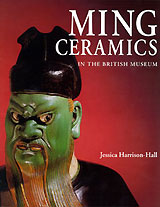

|
Recent
and forthcoming publications in 2005
Blurton, R.
2003. Introduction, in Tibetan Legacy. Paintings from the Hahn
Kwang-ho Collection. The Hahn Cultural Foundation: Seoul.
pp.89-103.
Canby, S.
In press. Jewelled Gifts to the Mughal Court. Transactions
of the Oriental Ceramic Society, volume 66, 2001-2002
Canby, S. & Thompson, J. 2003. Hunt for Paradise: Court
Arts of Safavid Iran, 1501-76. Skira: Milan.
Clark, T.
2003. Hiroshige to Maruyama-Shijo ha', Hiroshige no geijutsu-sei
to sono jidai (Bato-machi Hiroshige Bijutsukan kaikan kinen koen-kai,
kokusai shimpojiumu). Tochigi, Bato-machi Hiroshige Bijutsukan.
pp. 60-66.
Clark, T.
2003. Trade and Learning: The European 'Discovery' of the East
(Japan), in K. Sloan (ed.) Enlightenment: Discovering the World
in the Eighteenth Century. British Museum Press: London. pp.
266-269.
Clark, T.
2004. Utagawa Hiroshige (1797-1858) and the Maruyama-Shijo
School', in Amy Newland (ed.) The Commercial and Cultural Climate
of Japanese Printmaking. Hotei Publishing: Leiden.
Craddock,
P., Michaelson, C., Wang, H. & Wayman, M.L. 2003. Chinese
cast-iron through twenty-five hundred years, in Scientific
research in the field of Asian art. Archetype publications
in association with the Freer Gallery of Art, Smithsonian Institution.
pp.36-47.
Khan, F.,
Knox, J.R. & Thomas, K.D. In preparation. Excavations at Sheri
Khan Tarakai. Ancient Pakistan.
Khan, F.,
Morris, J.C. & Thomas, K.D. (eds.) In preparation. Excavations
at the Later Prehistoric Site of Lewan, NWFP, Pakistan. Society
for South Asian Studies Monograph.
McKillop,
B. & Portal, J. (eds.) In preparation. Papers from the
BAKS Study Days 2001/2: North Korean Culture and Society.
British Museum Research Publications.
Morris, J.C.,
Ashton, N. & Lee, K. 2003. An examination of lithic technological
variability at the site of Sheri Khan Tarakai, NWFP, Pakistan
through experimental replication. Paléorient 29(1):
135-146
Morris, J.C.
& Thomas, K.D. 2003. Excavations at the later prehistoric
site of Lewan, North-West Frontier Province, Pakistan. Papers
from the Institute of Archaeology, UCL 13: 94-100
Morris, J.C.
2004. "Agency" theory applied - a study of later
prehistoric lithic assemblages from northwest Pakistan, in Gardner,
A. (ed.) Agency Uncovered: Defining and Demystifying Agents in
Archaeology. UCL Press: London.
Morris, J.C.
In press. Lewan and Jhandi Babar A, in Parpola, A. (ed.) Corpus
of Indus Seals and Inscriptions 3.
Portal, J.
2003. Chinese Love Poetry. British Museum Press: London.
Porter, V.
2003. Islamic Seals: magical or practical, in E. Savage-Smith
(ed.) Magic and Divination in Early Islam. Ashgate Publishing.
Porter, V.
In press. Mightier than the Sword. Islamic Arts Museum
Malaysia
Harris,V and
Goto, K. (Eds). 2004. William Gowland The Father of Japanese
Archaeology, London, BMP & Asahi Newspaper
Harris, V,
2004. The Cutting Edge: Japanese Swords in the British Museum,
London, BMP
Gerstle, C.
Andrew. 2005. Kabuki Heroes of the Osaka Stage, 1780-1830,
London, British Museum Press
Reeve, J.
Autumn, 2005. Japanese Art in Detail, London, British Museum Press
.
|

|